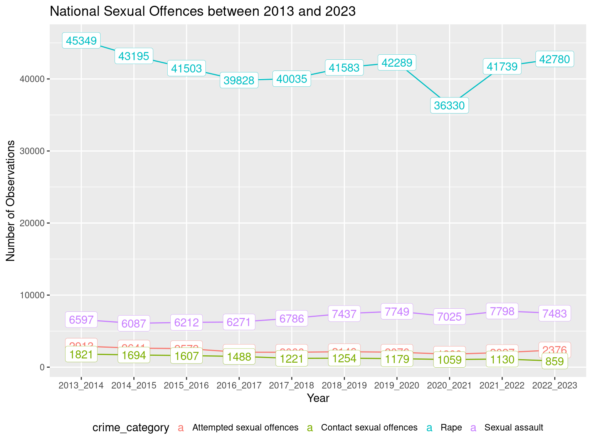

# load necessary libraries
library(tidyverse)
library(janitor)
library(here)South African Police Service Crime Stats - 2022-2023

Crime Situation in South Africa
South Africa has one of the highest-crime rate in the world - which includes high rates for crimes such as assaults, rape, murder, and other violent crimes. The high crime rate has been attributed to factors such as inadequate education, unemployment, poverty, and unequal distribution of resources. Violent crimes such as rape and murder are on the increase compared to other crimes in the country. South Africa has one of the highest rape rates in the world. According to the South African Medical Research Council, 1 in 4 men surveyed have committed rape.
The country crime rate affects foreign investment and reduces the faith in the government and institutions tasked with public safety.
Project description
The South African Police Service (SAPS) is the national police force of the Republic of South Africa. There are 1154 police stations in the country which are classified under provincial borders, with a provincial commissioner appointed for each of the 9 provinces in South Africa. The SAPS has 117950 officers who are responsible for the maintenance of public safety of 62 million South Africans.
The SAPS in collaboration with Statistics South Africa (Stats SA), generate crime statistics quarterly and annually. The statistics are in line with international best practices and are used to inform the policy development planning in the criminal justice systems.
The analysis goals:
view the crime trends in the country
See which crimes are most common in each province
give commentary on which areas need more police reinforcement based

Methodology
Crimes reported are recorded as they are received (from either the victims, witnesses or third parties) by the police or when they are detected by the police, irrespective of when the crime(s) were committed or who committed them. Crime statistics are created from recording process where a crime codes are allocated to a reported crime type. A police station has to aggregate the codes in order for the province and the national to synchronize computation and distribution of reports.
The crime statics are focused on the 21 priority crimes grouped into two categories:
17 community-reported serious crimes
contact
contact-related
property-related
other serious crimes
crimes that are detected as a result of police action.
Import libraries
filter_df <- function(df, crime_list){
df |>
filter(crime_category%in% crime_list) |>
group_by(year, crime_category, crime_count) |>
summarise(
) |>
mutate(
year = str_remove(year,"x")
)
}# read in the dataset
df_crime_sa = read_csv(here::here("data/raw/2022_2023 _annual_stats_raw.csv"))
#read_csv("../data/raw/2022_2023 _annual_stats_raw.csv")Data Preprocessing
# use the clean_names function to convert variable names to snake_case convention.
df_crime_sa_clean <- df_crime_sa |>
clean_names()# select relevant columns and remove columns with no information (NA in each row)
df_crime_sa_clean <- df_crime_sa_clean |>
select(crime_category_national_contribution_placement:count_offence_group)## save the df_crime_sa_clean to processed folder
# write_csv(df_crime_sa_clean,"../data/processed/df_crime_clean.csv")glimpse(df_crime_sa_clean)Rows: 49,084
Columns: 25
$ crime_category_national_contribution_placement <chr> "Murder Station 524",…
$ crime_category_provincial_contribution_placement <chr> "Eastern Cape Murder …
$ comp_level <chr> "Station", "Station",…
$ station_crime_category <chr> "Afsondering Murder",…
$ station <chr> "Afsondering", "Afson…
$ district <chr> "Alfred Nzo District"…
$ province <chr> "Eastern Cape", "East…
$ crime_category <chr> "Murder", "Attempted …
$ code <chr> "1", "2", "4", "6", "…
$ x2013_2014 <dbl> 14, 4, 8, 1, 13, 2, 2…
$ x2014_2015 <dbl> 15, 8, 14, 2, 7, 0, 0…
$ x2015_2016 <dbl> 9, 5, 13, 0, 22, 0, 1…
$ x2016_2017 <dbl> 18, 3, 12, 0, 13, 0, …
$ x2017_2018 <dbl> 4, 2, 21, 4, 20, 1, 0…
$ x2018_2019 <dbl> 7, 1, 14, 2, 8, 2, 1,…
$ x2019_2020 <dbl> 6, 5, 9, 1, 13, 0, 1,…
$ x2020_2021 <dbl> 12, 5, 9, 1, 17, 3, 0…
$ x2021_2022 <dbl> 20, 5, 6, 0, 15, 1, 3…
$ x2022_2023 <dbl> 11, 6, 8, 0, 17, 2, 0…
$ national_contribution_placement <dbl> 524, 687, 872, 1075, …
$ national_count_diff_placement <dbl> 1106, 527, 565, 731, …
$ provincial_contribution_placement <dbl> 98, 90, 131, 170, 110…
$ provincial_count_diff_placement <dbl> 191, 78, 83, 112, 65,…
$ count_direction <chr> "Decreased", "Increas…
$ count_offence_group <chr> "17 Community reporte…Crime Situation in the Republic of South Africa
In this section, we will look at the crime trends on a national level across selected crime categories over a 10 year period. The dataset will be filtered for observations were the comp_level is national.
# filter the crime dataset for observations where the comp_level is equal to National
df_crime_sa_national <- df_crime_sa_clean |>
filter(comp_level=="National") |>
select(crime_category:count_offence_group) |>
select(!provincial_contribution_placement) |>
pivot_longer(
cols = x2013_2014:x2022_2023,
names_to = "year",
values_to = "crime_count"
)Contact Crimes (Crimes Against The Person)
Contact crimes involves crimes where victims are targets of violence or cases where victims are near property that are target by criminals and are subjected to violence or the threats of violence.
The crimes included in this grouping are: Murder, Sexual offences, Attempted murder, Assault with the intention to inflict grievous bodily harm, Common assault, Common robbery, and Robbery with aggravating circumstances.
Two of the crime groupings can be further subdivided into other crimes:
Sexual Offences
Rape
Sexual Assault
Attempted sexual offences
Contact sexual assault
Robbery with aggravating circumstances
Carjacking Robbery at Non-residential premises
Robbery at residential premises
Robbery of cash in transit
Truck Hijacking
# create contact_crimes list
contact_crimes_list <- c("Murder", "Sexual offences", "Attempted murder", "Assault with the intent to inflict grievous bodily harm", "Common assault", "Common robbery", "Robbery with aggravating circumstances")
# create contact crimes dataframe
contact_crimes_national <- filter_df(df_crime_sa_national, contact_crimes_list)ggplot(data = contact_crimes_national,
aes(
x = year,
y = crime_count,
group = crime_category,
color = crime_category
))+
geom_line()+
labs (
title = "National Contact Crime between 2013 and 2023",
x = "Year",
y = "Number of Observations"
) +
geom_label(aes(
label = crime_count,
colour = crime_category
),
label.size = 0.1) +
# geom_text(check_overlap = TRUE) +
theme(legend.position = "bottom",
legend.key.size = unit(0.15,"cm"))
According to the stats and as presented in Figure 1, common assault, assault with the intent to inflict grievous bodily harm, and robbery with aggravating circumstances have been the most frequent contact crimes in South Africa in the past 10 years.
Sexual Offences
We shall look at the occurrence of sexual offences in the country over the past 10 years.
# create a list of offences that compose of sexual offences
sexual_offences_list <- c("Rape","Sexual assault","Attempted sexual offences","Contact sexual offences")
# filter out these offences from the national crime data frame
sexual_offences_national <- filter_df(df_crime_sa_national, sexual_offences_list)ggplot(data = sexual_offences_national,
aes(
x = year,
y = crime_count,
group = crime_category,
color = crime_category
))+
geom_line()+
labs (
title = "National Sexual Offences between 2013 and 2023",
x = "Year",
y = "Number of Observations"
) +
geom_label(aes(
label = crime_count,
colour = crime_category
),
label.size = 0.1) +
theme(legend.position = "bottom",
legend.key.size = unit(0.15,"cm"))
# create a list of some of the subcategories of aggravated robbery
robbery_agg_list <- c("Carjacking","Robbery at residential premises","Robbery at non-residential premises" )
# use the list to filter national crime dataframe
robbery_agg_national <- filter_df(df_crime_sa_national, robbery_agg_list)
ggplot(data = robbery_agg_national,
aes(
x = year,
y = crime_count,
group = crime_category,
color = crime_category
))+
geom_line()+
labs (
title = "National Aggrevated Robbery between 2013 and 2023",
x = "Year",
y = "Number of Observations"
) +
geom_label(aes(
label = crime_count,
colour = crime_category
),
label.size = 0.1) +
theme(legend.position = "bottom",
legend.key.size = unit(0.15,"cm"))Other Serious Crimes
These are serious crimes which have not been included in the categories above.
All Theft not mentioned elsewhere
Commercial crime
Shoplifting
Crimes Detected as a Result of Police Action
These are crimes mostly which are not reported to police, and are mostly dependent on the deployment of law enforcement and intelligence personnel. These crimes are recorded after the arrest of suspects connected to the following crimes.
Illegal possesion of firearms and ammunition
Drug-related crimes
Driving under the influence of alcohol and/or drugs
Sexual offences detected as a result of police action